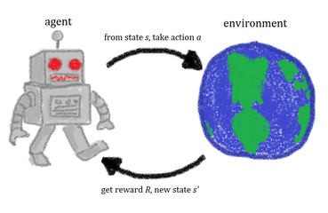

BGOV Machine Learning
Mingming Liu
What is ML?
- Learning patterns in your data without being explicitly programmed
- Function that maps features to an output
Types of Machine Learning
- Supervised Learning
- Unsupervised Learning
- Reinforcement Learning
Supervised Learning
| Classification | Regression |
Unsupervised Learning
Learn structure of unlabled data

Reinforcement Learning
|  |
- Learning what to do to maximize reward
- Explore and exploit
Projects at BGOV
- Solicitation dollor value prediction
- Solicitation RFP date prediction
- Named entity recognition
- Document classification
- Text summary extracton